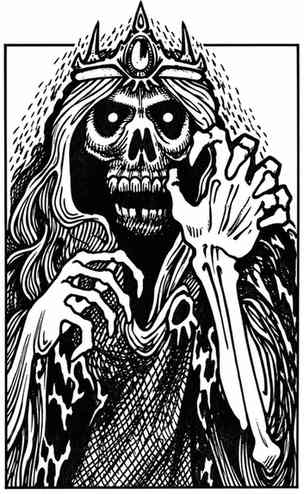

巫妖 · Lich
 |
|
巫妖是凭借自身意志与强大奥秘魔法达成不死形态的存在。它以意志之力从人类转化为非人、非生命的存在，再通过特定咒法、附魔与命匣维持这种状态。巫妖通常栖身于隐秘居所，地点多在荒野或广阔的地下迷宫；巢穴总是以石材坚固建造，并且十分阴暗。转化为巫妖后，其护甲等级相当于身穿 +1 板甲并持有 +1 盾牌（护甲等级 0）；生命骰为八面骰。只有魔法攻击、具有魔法性质的怪物，或生命骰至少为 6 的怪物才能影响巫妖。
巫妖生前通常是至少 18 级的强大魔法师，或魔法师／牧师。它的触碰冰冷刺骨，可造成 1–10 点伤害；未通过豁免检定的对手还会麻痹。任何低于 5 级（或少于 5 颗生命骰）的生物只要看见巫妖，便会因恐惧而惊慌逃跑。巫妖可使用其转化为非人存在前所掌握等级对应的魔法。
以下法术或攻击方式对巫妖无效：魅惑、睡眠、虚弱、变形、寒冷、电击、疯狂，以及死亡类法术或符文。
外观。 巫妖看起来很像幽影或木乃伊，形体枯槁如骷髅，眼窝只是黑洞，其中闪烁着光点；它们通常穿着华贵却腐朽的衣物。